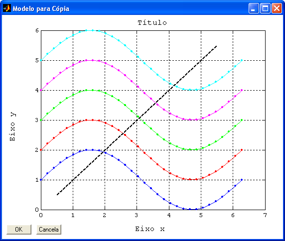
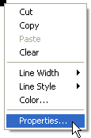
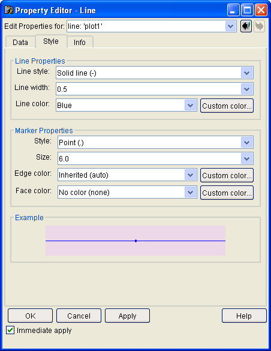

| Menu
Editar |
|
Editar
Modelo de Cópia
Essa operação
permite ao usuário formatar o modelo de
gráfico a ser utilizado pela operação Copiar
no
modelo.
Clique no menu
“Editar ► Editar modelo de cópia”.
Os seguintes
objetos podem ser formatados:
- Janela do modelo;
- Gráfico principal (os gráficos secundários terão o mesmo padrão);
- Plote
principal;
- Quatro plotes secundários;
- Nomes dos eixos;
- Título do gráfico;
- Plote do ajuste de
curva.
Um exemplo de
modelo formatado é apresentado a seguir:

Todas as
propriedades relativas à aparência dos objetos
gráficos são editáveis. Os valores, escalas e nomes serão importados do
gráfico
principal do R_DAT.
Para editar as
propriedades, utilize a ferramenta “Property Editor” do
MATLAB, clicando com o botão
direito sobre o objeto desejado e escolhendo a opção “Properties”
do menu, ou dando um duplo-clique
sobre o objeto desejado:


|
Nota: Não exclua
nenhum dos objetos do modelo, ou o mesmo será perdido e terá que ser
redefinido. |
| |
Copiar
no modelo |
Tipos de
linhas |
|